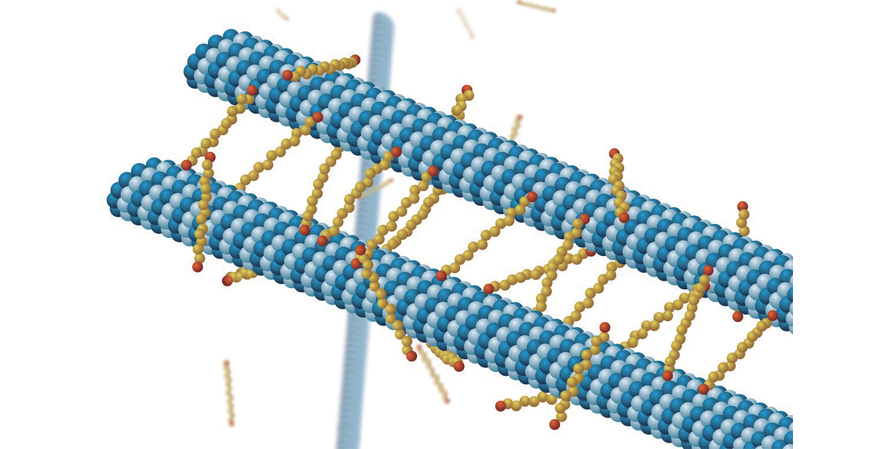
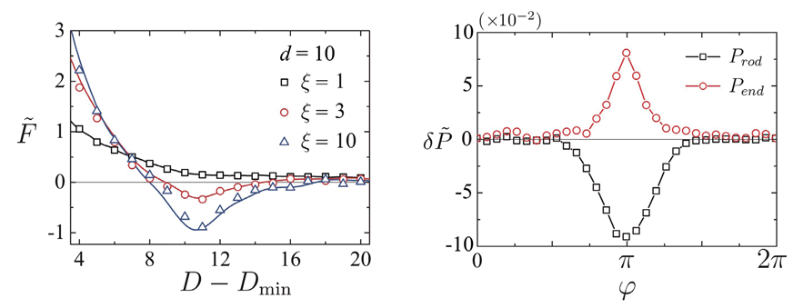

연구성과 10선
연구성과 10선
KAIST RESEARCH ACHIEVEMENTS
DNA 사이의 상호작용에서
막대모양 이온의 역할 규명
나노과학기술대학원 김용운
요약
스페르민이나 스페르미딘 같은 막대모양의 폴리아민 이온들이 DNA나 세포 미소관 같이 전하를 띈 다양한 생체 고분자들 사이에 인력적 상호작용을 유도하고 이를 통해 생체 기능에 중요한 역할을 수행하는 고분자들의 응집상을 촉발한다는 것이 최근 들어 실험적으로 알려졌다. 그러나 같은 전하를 띈 생체 고분자는 항상 정전기적 척력을 경험할 수밖에 없다는 것이 지난 백 년 동안 이러한 이온용액을 기술하는데 널리 사용되어 온 포아송-볼츠만 이론의 예측이었다. 최근 KAIST 연구진은 막대모양의 이온들을 고려한 이론 모형을 통해 이와 같은 모순을 해결하고, DNA 사이에 인력적 상호작용이 가능함을 보였다. 본 연구를 통해 막대모양의 폴리아민 이온들이 생체조건에서 어떻게 효과적으로 고분자 응집상을 유도하는지 이해할 수 있었고, 이는 전하를 띈 생체물질들의 상호작용에 대한 근원적 이해를 넓힐 것으로 기대된다.
연구배경
디옥시리보 핵산(DNA), 미세관(micotubule), 액틴필라멘트(actin filament)와 같이 전기적 전하를 띈 생체 고분자들은 세포 내에서 특징적인 자기조립 구조를 만들고 이를 통해 생명현상에 필요한 다양한 기능을 수행하기 때문에 생물학 분야에서 많은 관심의 대상이 되어왔다. 특히, 같은 전하를 띈 고분자들이 어떻게 전기적 반발력을 극복하고 평형상태에서 특징적인 자기조립 구조 및 응집상을 만들 수 있는가란 질문은 비단 생물학자들뿐만 아니라 물리학자들에게도 오랫동안 풀리지 않는 수수께끼였다. 고분자 전해질 같은 이온 용액을 기술하는데 지난 한 세기 동안 성공적으로 사용되어온 포아송-볼츠만 방정식(Poisson-Boltzmann equation)의 해에 의하면 고분자 전해질은 항상 서로 밀어내는 척력을 보일 수밖에 없다는 점에서 인력적 상호작용을 의미하는 고분자의 자기조립 구조는 무른 응집물질 물리 분야의 대표적 퍼즐 가운데 하나로 인식되었다.
이 질문에 대해, 지난 20년 동안의 연구를 통해 받아들여지고 있는 설명은 다음과 같다. 세포 내에는 고분자 전해질과 반대 전하를 띈 다가(multivalent) 이온들이 존재하며, 다가 이온들이 만들어내는 강한 정전기적 상관관계(strong electrostatic correlations)를 통해 고분자 전해질 사이에 인력이 형성되는데, 이러한 정전기적 상관관계는 일종의 평균장 이론인 포아송-볼츠만 방정식에 의해 기술될 수 없다는 것이다. 위와 같은 설명은 포아송-볼츠만 방정식의 예측과 반대되는 실제 현상을 설명할 수 있기에 얼핏 만족스러워 보인다. 그러나 실제 세포 내에는 많은 양의 일가(monovalent) 전해질 이온들이 존재하는데, 이러한 경우 이온들 사이의 강한 정전기적 상호작용이 중요하지 않게 되고 포아송-볼츠만 방정식이 여전히 유효하다는 사실 또한 잘 알려져 있다. 즉, 평균장 근사가 유효하리라 기대되는 실제 생체 조건에서 고분자 전해질들 사이의 인력적 상호작용을 어떻게 설명할 수 있는가에 대한 해답은 아직 명확하지 않으며 이것이 본 연구의 주된 관심사였다. KAIST 연구진은 고분자의 자기조립 과정에서 스페르민(spermine), 스페르미딘(spermidine)과 같은 다가 이온들이 중요한 역할을 수행한다는 실험 결과에 주목하였다. 이러한 이온들은 막대모양을 가지고 있으며 막대모양의 뼈대를 따라 이산적인 전하 분포를 가지고 있다. 따라서 포아송-볼츠만 방정식에서 흔히 쓰이는 점전하 근사가 더 이상 유효하지 않게 된다. 이에 본 연구에서는 몬테카를로 시늉내기(Monte Carlo simulations)를 통해, 용액 속에 아령 모양의 막대형 이온들이 존재할 때, 전하를 띈 고분자들 사이의 상호작용을 계산하였다(그림 1).
 그림 1. 전하를 띈 두 고분자와 막대 모양의 이온
(그림 1). 그 결과, 막대형 이온의 길이가 커짐에 따라 포아송-볼츠만 방정식이 유효한 약한 상호작용의 영역에서도 고분자들이 인력적 상호작용을 할 수 있음을 보였다(그림 2, 왼쪽). 이는 고분자들 사이에 분포하는 막대모양 이온들이 두 고분자들을 연결(bridge)하는 형태로 고분자 축에 수직하게 배열함으로써 고분자 사이 공간의 삼투압력이 음의 값을 가지기 때문이라는 것을 밝혔다(그림 2).

그림 2. 고분자 사이에 작용하는 힘(왼쪽)과 삼투압력(오른쪽)
[Cha, Ro, and Kim, Phys. Rev. Lett. 121, 058001 (2018)]
기대효과
본 연구를 통해 다가 이온의 막대형 구조와 이로 인한 비등방적 삼투압력을 고려하는 것이 고분자 전해질 사이의 상호작용을 이해하는데 중요함을 알 수 있었다. 특히, 본 연구는 생체내에 소량으로 존재하는 폴리아민 계열 이온들이 왜 생체 고분자의 응집상 형성에 중요한 역할을 수행하는지, 그 물리적 기작을 밝힌 최초의 연구로서 막대모양 이온을 이용하여 생체 고분자의 자기조립상을 제어하기 위한 후속 연구들의 이론적 토대를 마련할 것으로 기대된다. 또한 지난 백 년 동안 포아송-볼츠만 방정식에서 사용되어온 점전하 근사를 뛰어 넘어 이온들의 형태적 자유도를 고려한 이론 연구라는 점에서 학문적 의의를 지니고 있다.
연구성과
[논문] M. Cha, S. Ro, and Y. W. Kim*, "Rodlike counterions near charged cylinders: counterion condensation and inter-cylinder interaction", Phys. Rev. Lett. 121, 058001 (2018)
연구성과
This research was supported by a National Research Foundation of Korea (NRF) grant funded by the Korean government (Grant No. NRF- 2017R1A2B4007608)